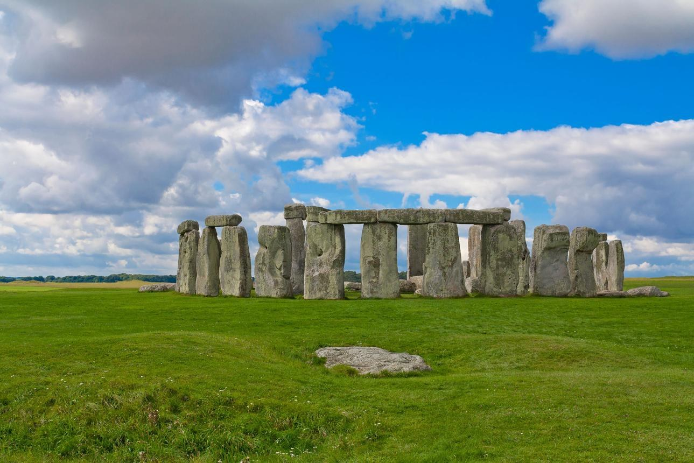
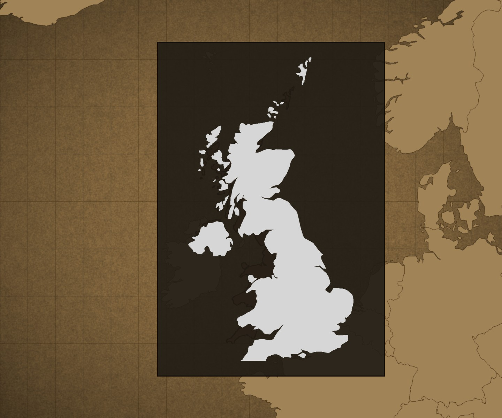
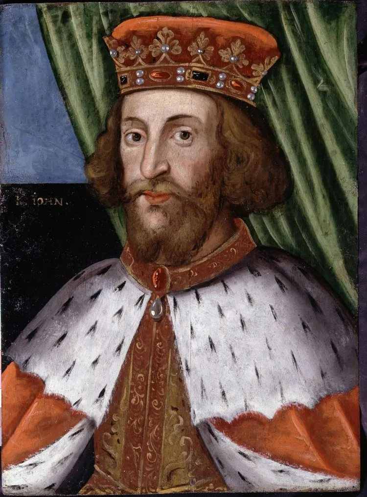
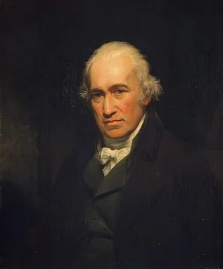
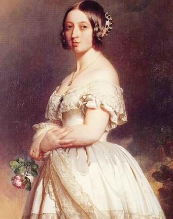
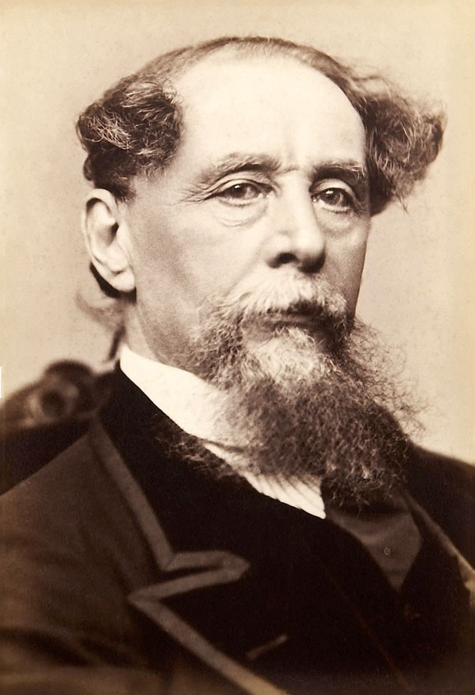
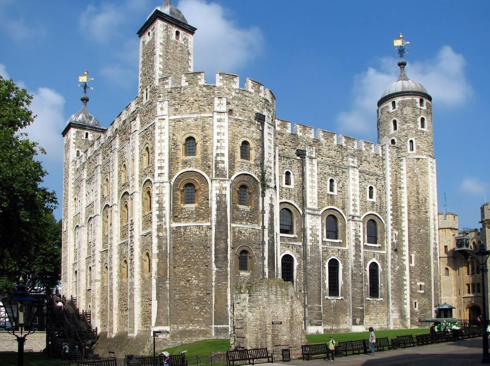
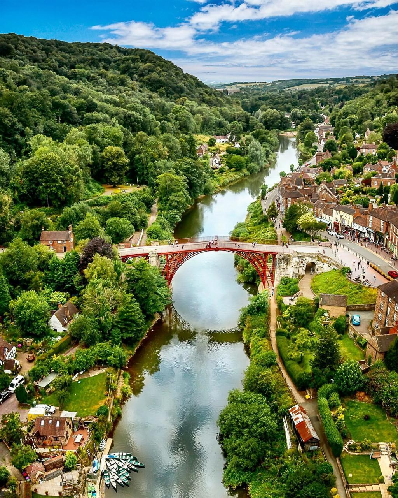

스톤헨지
위치: 잉글랜드 윌트셔주
- 특징 거대한 돌기둥을 원형으로 배치한 선사시대 유적이다. 약 5,000년 전부터 조성되기 시작했다.
- 역사적 의미 선사시대 사람들의 건축 기술과 종교·의례 문화를 보여주는 대표적인 유적이다.
해가 지지 않는 나라, 영국
UNITED KINGDOM
국가 개요
해가 지지 않는 나라, 영국


1199~1216귀족들의 반발에 직면해 마그나 카르타에 서명한 잉글랜드의 왕
관련 사건: 마그나 카르타 체결

1736~1819증기기관을 개량해 산업혁명에 기여한 발명가
관련 사건: 산업혁명

1837~1901대영제국이 팽창하던 시기에 재위한 영국의 여왕
관련 사건: 대영제국의 팽창
『햄릿』, 『로미오와 줄리엣』 등을 쓴 극작가로, 세계 연극과 문학에 큰 영향을 미쳤다

1812~1870사회와 인간관계를 다룬 작품을 남긴 영국의 작가
핵심 사건
중요한 이유
로마 문화와 여러 게르만계 집단의 영향으로 이후 영국 사회의 기반이 형성됨.
핵심 사건
중요한 이유
왕권과 귀족의 관계가 변화하고, 법에 따른 통치 원칙이 발전함.
핵심 사건
중요한 이유
통치 체제가 변화하고 대브리튼 왕국이 탄생함.
핵심 사건
중요한 이유
공업과 무역이 성장하고 영국이 세계적인 산업·해양 강국으로 발전함.
핵심 사건
중요한 이유
세계대전을 거치며 국제적 영향력이 변화하고 현대 영국의 정치·사회가 형성됨.

위치: 잉글랜드 윌트셔주

위치: 잉글랜드 런던
위치: 잉글랜드 런던

위치: 잉글랜드 슈롭셔주
The Faces of
존 왕부터 찰스 3세까지, 영국 역사를 이끈 왕과 여왕 6명의 초상화를 만나 보세요.